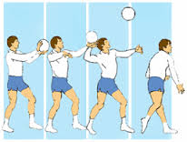
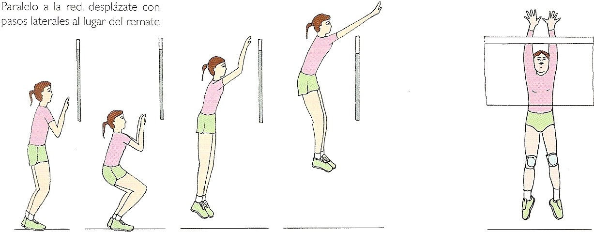
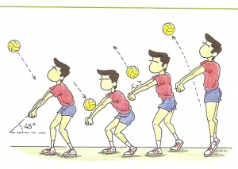
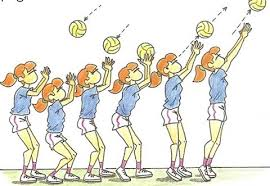
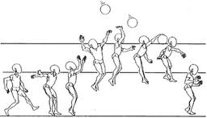

El vóleibol fue creado en 1895 por William G. Morgan. Era entonces director de Educación Física en el Ymca de Holihoke, en el estado de Massachusetts, y había establecido, desarrollado y dirigido, un vasto programa de ejercicios y de clases deportivas masculinas para adultos. Se dio cuenta de que precisaba de algún juego de entretenimiento y competición a la vez para variar su programa, y no disponiendo más que del baloncesto, creado cuatro años antes (1891), echó mano de sus propios métodos y experiencias prácticas para crear un nuevo juego.
Morgan describe así sus primeras investigaciones:
“El tenis se presentó en primer lugar ante mi, pero precisaba raquetas, pelotas, una red y demás equipo. De esta manera, fue descartado. Sin embargo, la idea de una red parecía buena. La elevamos alrededor de 6 pies y 6 pulgadas del suelo, es decir, justo por encima de la cabeza de un hombre medio. Debíamos tener un balón y entre aquellos que habíamos probado, teníamos la vejiga (cámara) del balón de baloncesto. Pero se reveló demasiado ligero y demasiado lento; entonces probamos con el balón de baloncesto, mismo, pero era demasiado grande y demasiado pesado. De esta manera nos vimos obligados a hacer construir un balón de cuero con la cámara de caucho que pesara entre 9 u 12 onzas“.
La Mintonette, primer nombre con el que se le había bautizado al deporte. El profesor Halstead llama la atención sobre la “batida” o la fase activa del lanzamiento, y propone el nombre de “Vóleibol”. Gracias al Ymca el juego del voleibol fue introducido en Canadá y en muchos países: Elwood S. BROWM en las Filipinas; J. Oward CROCKER en China; Frank H. BROWN en Japón, el doctor J.H. GRAY en Birmania, en China y en la India, así como por otros precursores en México, en América del Sur, en Europa, en Africa y en Asia. Los primeros campeonatos nacionales de voleibol tuvieron lugar en los Estados Unidos en 1922, y es en 1928 cuando se crea el USVA: la United States Volleyball Association. En 1938 se establecieron unos contactos internacionales entre Polonia y Francia. Desgraciadamente, la Segunda Guerra Mundial interrumpió las entrevistas. Solamente a finales de 1945 fue posible establecer nuevas relaciones. Por su parte, el doctor Harold T. Friermood, entonces miembro del Ymca y muy pronto secretario de la Usvba, intentó establecer otra vez las relaciones internacionales e hizo difundir algunas obras sobre el voleibol.
La Federación Internacional de Voleibol (FIVB) se fundó en 1947 y los primeros campeonatos mundiales tuvieron lugar en 1949 (masculino) y 1952 (femenino). Desde 1964 ha sido deporte olímpico. Recientemente se han introducido cambios sustanciales en el voleibol buscando un juego más vistoso. En 1998 se introduce la figura del jugador líbero. En 2000 se reduce de forma importante la duración de los encuentros al eliminar la exigencia de estar en posesión del saque para puntuar; se puede ganar punto y saque en la misma jugada mientras que antes se podía estar robando saques de forma alternativa sin que el marcador avanzara. Se ha permitido el toque con cualquier parte del cuerpo o se permite que el saque toque la red siempre que acabe pasando a campo contrario.
Se emplean diversas técnicas para impulsar la pelota en distintas situaciones del juego. En todas ellas el balón debe ser golpeado, no agarrado ni lanzado
Servicio

Cada punto se inicia con un saque del balón desde detrás de la línea de fondo. Se lanza el balón al aire y se golpea hacia el campo contrario buscando los puntos débiles de la defensa del adversario. Se puede hacer de pie o en salto. Es importante la orientación del saque porque el jugador contrario, que se ve obligado a recibir el tiro, queda limitado para participar en el ataque.
Bloqueo

Es la acción encaminada a interceptar cualquier ataque del equipo contrario, saltando junto a la red con los brazos alzados buscando devolver directamente el balón al campo del contrario, o en su defecto, estrecharle el campo de ataque para inducirlo a echar el balón fuera del terreno de juego. En el bloqueo pueden participar hasta tres jugadores (los tres delanteros) para aumentar las posibilidades de intercepción. También serán importantes aquí las ayudas de la segunda línea para recuperar el balón en caso de un bloqueo fallido. Una de las opciones que tiene el atacante en salto es precisamente no evitarlo, sino lanzar el balón con fuerza directamente contra el bloqueo, forzando el fallo y la correspondiente falta.
Recepcion

Interceptar y controlar un balón dirigiéndolo hacia otro compañero en buenas condiciones para poder jugarlo. Los balones bajos se reciben con los antebrazos unidos al frente a la altura de la cintura y los altos con los dedos, por encima de la cabeza. En otros casos hacen falta movimientos más espectaculares. Es habitual ver al jugador lanzarse en plancha sobre el abdomen estirando el brazo para que el balón bote sobre la mano en vez de en el suelo y evitar así el punto.
Colocacion o Acomodo

Normalmente el segundo toque tiene como fin proporcionar un balón en condiciones óptimas para que con el tercer toque un rematador lo meta finalmente al campo contrario. La colocación se realiza alzando las manos con un pase de dedos, el pase más preciso en el voleibol. El colocador tiene en su mano (y en su cabeza) la responsabilidad de ir distribuyendo a lo largo del juego balones a los distintos rematadores y por las distintas zonas.
Ataque

El jugador, saltando, envía finalmente el balón con fuerza al campo contrario buscando lugares mal defendidos, o contra los propios jugadores contrarios en condiciones de velocidad o dirección tales que no lo puedan controlar y el balón vaya fuera.